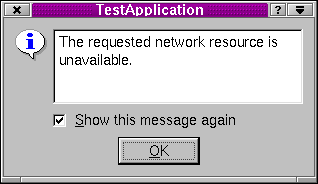

QErrorMessage Class Reference
The QErrorMessage class provides an error message display dialog.
More...
#include <qerrormessage.h>
Inherits QDialog.
List of all member functions.
Public Members
Public Slots
Static Public Members
Detailed Description
The QErrorMessage class provides an error message display dialog.
This is basically a QLabel and a "show this message again" checkbox which
remembers what not to show.
There are two ways to use this class:
- For production applications. In this context the class can be used to
display messages which you don't need the user to see more than once. To use
QErrorMessage like this, you create the dialog in the usual way and call the
message() slot, or connect signals to it.
- For developers. In this context the static qtHandler() installs
a message handler using qInstallMsgHandler() and creates a QErrorMessage
that displays qDebug(), qWarning() and qFatal() messages.
In both cases QErrorMessage will queue pending messages, and display
them (or not) in order, as soon as the user presses Enter or clicks OK
after seeing each message.

See also QMessageBox, QStatusBar::message(), Dialog Classes, and Miscellaneous Classes.
Member Function Documentation
QErrorMessage::QErrorMessage ( QWidget * parent, const char * name = 0 )
Constructs and installs an error handler window.
The parent parent and name name are passed on to the QDialog
constructor.
QErrorMessage::~QErrorMessage ()
Destroys the object and frees any allocated resources. Notably,
the list of "do not show again" messages is deleted.
void QErrorMessage::message ( const QString & m ) [slot]
Shows message m and returns immediately. If the user has requested
that m not be shown, this function does nothing.
Normally, m is shown at once, but if there are pending messages,
m is queued for later display.
QErrorMessage * QErrorMessage::qtHandler () [static]
Returns a pointer to a QErrorMessage object that outputs the
default Qt messages. This function creates such an object, if there
isn't one already.
This file is part of the Qt toolkit.
Copyright © 1995-2007
Trolltech. All Rights Reserved.